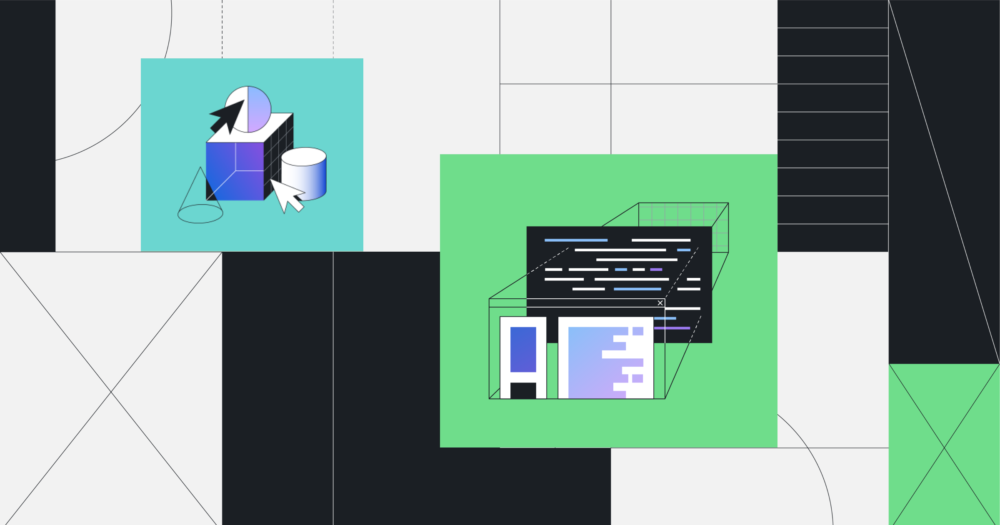

Thorium Compiler Optimizations
Document explaining the compiler optimizations of Thorium: what they do and how they work.
To see a performance comparison between Chromium
and Thorium, see This Page.
To test Thorium's speed, see my Speedometer Fork.
Thorium uses many modifications to the compiler configuration in the BUILD.gn file, which highly optimize the browser, at the cost of size. Google tries to minimize size at any cost (including RAM usage and performance), but Thorium takes a different approach. While Thorium takes up approximately ~250MB compared to ~150MB for Chrome (Note that the full Thorium installer is ~500MB because it includes other stuff like thorium_shell and chromedriver), neither of these is very large, and me and many others appreciate speed and performance over the smallest size.
A highlight of these optimizations, and the first we will discuss, is AVX. AVX, or Advanced Vector Extensions, is an instruction set extension for 2nd Gen Core (Intel), and AMD FX Processors and newer. It enables contracting mathematical expressions in source code into a vector format in which the CPU can perform multiple operations on data at a time, so it is a SIMD instruction set like its predecessors: MMX, SSE, SSE2, SSE3, and SSE4. The Chromium Project makes heavy use of code that can be vectorized, and so AVX is a logical step in improving performance. The only reason Chromium does not use it by default is compatibility: older processors (pre-2011) dont have AVX capability, and so cannot run programs compiled with AVX. To combat this, and to provide Thorium to a wider audience, I occassionally make releases for Linux and Windows that are SSE4/SSE3 only.
The second instruction set extension Thorium makes use of is AES (also known as AES-NI ), which is particularly useful for software such as a browser: Much of the cryptography in https enabled web pages, as well as the certificates websites use, is encrypted with AES. Compiling a program with AES-NI speeds up encryption/decryption of these things.
Next is the GCC flags that Thorium uses. These are split into CFLAGS, and LDFLAGS; for the compiler and the linker, respectively. There are multiple optimization levels, specified by the "-O" flag, from -O0 to -O3. Chromium (and hence Chrome) by default use a mixture of -O1 and -O2; Thorium sets all of them to -O3. To learn more about these flags, see Here.
Thirdly, there are the LOOP and Polly flags. Thorium uses some flags passed manually and directly to Clang and LLD : the compiler and linker that Chromium/Thorium use (part of the LLVM collection). The LOOP optimizations can contract code loops into smaller instructions, increasing data locality. Polly was recently introduced into the Thorium toolchain, and provides multiple optimizations that influence the aforementioned flags. To learn more about Polly, see Here.
Lastly, there are optimizations that Thorium uses that Official builds of Chrome and Chromium also use: thinLTO and PGO. LTO, or Link-Time Optimization, runs during the linking stage, and can be performed "Full" (fullLTO), or "thin" (thinLTO). thinLTO is better for a project the size of Chromium, and takes flags similar to that of GCC. Chromium by default uses -O2 for thinLTO, Thorium uses -O3. The last optimization that Thorium uses is PGO, or Profile Guided Optimization. This optimization technique uses a *.profdata "profile" data file, which is generated by a profiler to optimize the entire binary. The profiler does a test run of the binary, and records which parts of code are accessed most frequently, their memory access paterns, and what data they frequently fetch. The data file generated then guides the compiler on the next run, and tells it which places in code to optimize more aggressively, and in what way to do so.
All of these optimizations work together cohesively to make Thorium run extremely fast on your system. There are many Chromium-based browsers out there with subsets of these optimizations, but only Thorium uses all of them together to allow it to live up to its motto, "The fastest browser on Earth". This is the principle goal of the project, (although there are plenty of other tweaks/patches/enhancements too): to bring you the most performant browsing experience on Linux, Windows, MacOS, and Raspberry Pi. I thank you, the user, for your interest in the Thorium Project, and for exploring this site.
–Alex313031
